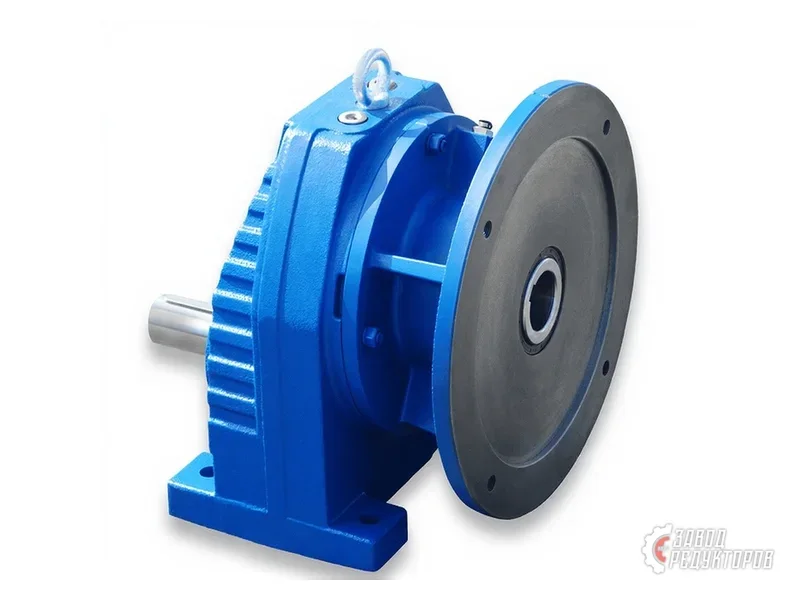
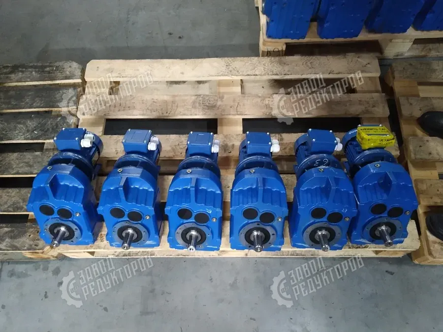

Межосевое расстояние редуктора — базовый размер, который задаёт типоразмер передачи и напрямую связан с передаваемым моментом и габаритами корпуса. Именно это число зашифровано в маркировке отечественных серий, и именно по нему удобно сопоставлять редукторы при подборе и замене импортного привода. Разберём, что такое межосевое расстояние и как его правильно использовать.
Межосевое расстояние (его также называют межцентровым расстоянием) — это расстояние между осями двух валов одной ступени зубчатой передачи, то есть между осью ведущего и осью ведомого колеса. Обозначается обычно буквой aw и измеряется в миллиметрах. Геометрически это половина суммы делительных диаметров шестерни и колеса: чем больше колёса и чем мощнее зацепление, тем больше межосевое расстояние ступени.
В многоступенчатом редукторе межосевых расстояний несколько — по числу ступеней. Но в маркировке и каталогах под межосевым расстоянием редуктора понимают, как правило, расстояние тихоходной (выходной) ступени, поскольку именно она несёт максимальный момент и определяет размер корпуса. У быстроходных ступеней колёса мельче, а межосевые расстояния меньше, поэтому на типоразмер они влияют слабее.
Не следует путать межосевое расстояние с межцентровым расстоянием отверстий под крепёж или с высотой оси выходного вала над опорной плоскостью (этот размер задают отдельно при монтаже). Межцентровое расстояние в контексте передачи — это синоним межосевого: речь идёт именно об осях валов в зацеплении, а не об отверстиях лап.

У отечественных редукторов межосевое расстояние стоит прямо в названии модели — это число в миллиметрах. У цилиндрических двухступенчатых серий Ц2У цифры после букв (например, Ц2У-200) — это межосевое расстояние тихоходной ступени в мм. У червячных редукторов Ч число (Ч-100, Ч-160) также означает межосевое расстояние червячной пары в мм.
Таким образом, по одному числу в марке инженер сразу понимает типоразмер и примерный габарит. Подробный разбор всех буквенных и цифровых обозначений — в статье расшифровка маркировки редукторов.
Межосевое расстояние — это, по сути, имя типоразмера. Внутри одной серии оно идёт фиксированным рядом значений, и каждому значению соответствует свой корпус, свой диапазон передаваемых моментов и свои присоединительные размеры. Зависимость прямая: больше межосевое расстояние — крупнее зубчатые колёса — выше допустимый момент на выходном валу — больше масса и габариты редуктора.
Поэтому подобрать редуктор «с запасом» по моменту — значит перейти на больший типоразмер, то есть на большее межосевое расстояние, а не просто заказать «тот же редуктор помощнее». Внутри одного типоразмера запас момента ограничен и регулируется в основном выбором передаточного числа и материала зацепления, а не самим межосевым расстоянием.
При подборе межосевое расстояние — быстрый ориентир по типоразмеру: зная требуемый момент, выбирают ближайшее значение из ряда, а затем уточняют передаточное число и исполнение. Удобно начинать подбор именно с него, потому что это число однозначно задаёт серию и корпус.
При замене импортного привода межосевое расстояние помогает сопоставить отечественную модель с зарубежной по габариту. Но решающими остаются присоединительные размеры — диаметр и длина выходного вала, размеры лап или фланца, расположение отверстий. Подбираемый габаритный и присоединительный аналог должен встать на штатное место без переделки рамы; при расхождении изготавливают переходный фланец или спецвал.

Межосевые расстояния стандартизированы и идут предпочтительным рядом чисел. У цилиндрических и червячных серий это, как правило, значения вида 40, 50, 63, 80, 100, 125, 160, 200, 250, 315, 400 мм и далее. Ряд построен так, чтобы соседние типоразмеры отличались примерно в одинаковое число раз — это упрощает выбор и унификацию узлов между сериями.
На практике это означает, что промежуточных значений не бывает: если расчётный момент попадает между двумя типоразмерами, выбирают больший из ряда. Поэтому знание ряда межосевых расстояний помогает заранее прикинуть габарит будущего привода и оценить, встанет ли он в имеющееся посадочное место.
Ориентировочное соответствие типоразмера цилиндрической передачи и его межосевого расстояния тихоходной ступени (значения предпочтительного ряда, мм):
| Типоразмер | Межосевое расстояние, мм |
|---|---|
| Ц2У-100 | 100 |
| Ц2У-125 | 125 |
| Ц2У-160 | 160 |
| Ц2У-200 | 200 |
| Ц2У-250 | 250 |
| Ц2У-315 | 315 |
Межосевое расстояние редуктора — это расстояние между осями валов ступени и одновременно имя типоразмера: оно стоит в маркировке Ц2У и Ч, растёт вместе с моментом и габаритами и служит удобным ориентиром при подборе. Чтобы безошибочно выбрать модель или подобрать аналог импорту, пришлите параметры или фото шильдика — инженер Завода Редукторов рассчитает подбор редуктора, сверит присоединительные размеры и пришлёт коммерческое предложение.
Это расстояние между осями ведущего и ведомого валов одной ступени зубчатой передачи, измеряется в миллиметрах и обозначается aw. Геометрически оно равно половине суммы делительных диаметров шестерни и колеса. По сути это базовый размер, задающий типоразмер передачи.
В контексте зубчатой передачи это синонимы — речь об осях валов в зацеплении. Не путайте этот размер с межцентровым расстоянием крепёжных отверстий лап или с высотой оси выходного вала над опорной плоскостью. Последние задают отдельно при монтаже.
В каталогах и маркировке под межосевым расстоянием редуктора понимают значение тихоходной (выходной) ступени. Именно она несёт максимальный момент и определяет габарит корпуса. Быстроходные ступени имеют меньшие колёса и на типоразмер влияют слабее.
У отечественных серий это число прямо в названии модели в миллиметрах. У цилиндрических Ц2У-200 цифры означают межосевое расстояние тихоходной ступени, у червячных Ч-100 — межосевое расстояние червячной пары. По одному числу инженер сразу видит типоразмер и примерный габарит.
Зависимость прямая: больше межосевое расстояние — крупнее колёса — выше допустимый момент на выходном валу — больше масса и габариты. Поэтому подбор «с запасом» по моменту означает переход на больший типоразмер, а не заказ «того же редуктора помощнее».
Нет. У двух редукторов разных серий совпадение межосевого расстояния не гарантирует одинаковый момент и взаимозаменяемость. Решающими остаются присоединительные размеры — диаметр и длина вала, размеры лап и фланцев. При замене импорта их сверяют отдельно.
Само межосевое расстояние при изготовлении выдерживают с высокой точностью: отклонение в расположении осей валов напрямую меняет боковой зазор в зацеплении и характер контакта зубьев. Если фактическое межосевое расстояние больше номинального, зазор растёт, передача начинает работать с ударами и повышенным шумом; если меньше — зубья поджимаются, растут потери на трение и нагрев. Поэтому корпус редуктора и расточки под подшипники обрабатывают так, чтобы реальное межосевое расстояние ступени укладывалось в допуск, заданный для конкретного типоразмера.
Из этого следует практический вывод для эксплуатации: межосевое расстояние нельзя «подогнать» при ремонте произвольной проставкой или смещением вала. Восстановление изношенного корпуса по осям — отдельная технологическая операция с контролем по эталону. Именно поэтому при замене редуктора аналогом сверяют не только присоединительные размеры, но и заявленное межосевое расстояние выходной ступени: оно косвенно подтверждает, что внутренняя геометрия передачи и её несущая способность сопоставимы с оригиналом.
Ориентировочное соответствие межосевого расстояния тихоходной ступени aw и характерного диапазона передаваемого момента и мощности для цилиндрических редукторов. Значения справочные и служат для предварительной прикидки типоразмера — точные данные берут из паспорта конкретной серии:
| Типоразмер | aw, мм | Момент, ориентир | Мощность, ориентир |
|---|---|---|---|
| Ц2У-100 | 100 | до ~0,5 кН·м | ~1–3 кВт |
| Ц2У-125 | 125 | ~0,8 кН·м | ~2–5 кВт |
| Ц2У-160 | 160 | ~1,6 кН·м | ~4–11 кВт |
| Ц2У-200 | 200 | ~3 кН·м | ~7,5–22 кВт |
| Ц2У-250 | 250 | ~6 кН·м | ~15–45 кВт |
| Ц2У-315 | 315 | ~11 кН·м | ~30–90 кВт |
Межосевое расстояние редуктора — ключевой размерный параметр, по которому удобно начинать подбор и сопоставление моделей. Зная требуемый момент и габарит посадочного места, по межосевому расстоянию редуктора инженер быстро определяет типоразмер цилиндрической или червячной серии, а затем уточняет передаточное число, исполнение и присоединительные размеры. Грамотный учёт межосевого расстояния редуктора экономит время при замене импортного привода и снижает риск ошибки при заказе.
Межосевое расстояние aw — это расстояние между осями входного (быстроходного) и выходного (тихоходного) валов цилиндрической ступени или между осью червяка и колеса у червячного редуктора. У отечественных и импортных серий оно стандартизовано по рядам (например, 40, 50, 63, 80, 100, 125, 160, 200 мм), и именно по этому числу в обозначении удобно начинать подбор типоразмера.
Межосевое расстояние косвенно характеризует передаваемый момент: чем оно больше, тем крупнее зубчатые колёса и выше нагрузочная способность редуктора. Поэтому при замене импортного привода aw сверяют в первую очередь — оно должно совпадать с присоединительными размерами посадочного места, иначе редуктор не встанет без переделки рамы.
| Межосевое aw, мм | Ориентировочный момент M2 |
|---|---|
| 40–50 | до 150 Н·м |
| 63–80 | 150–600 Н·м |
| 100–125 | 600–2000 Н·м |
| 160–200 | 2000–8000 Н·м |
| 250 и более | свыше 8000 Н·м |
| Серия | Как зашито aw |
|---|---|
| МЧ-80 | 80 — межосевое 80 мм |
| Ч-100 | 100 — межосевое 100 мм |
| NMRV 063 | 063 — межосевое 63 мм |
| Ц2У-160 | 160 — межосевое 160 мм |
| 2Ч-63 | 63 — межосевое тихоходной ступени |
Рассчитать модель под вашу нагрузку поможет подбор редуктора. Разобраться, как межосевое расстояние и другие параметры зашифрованы в обозначении, можно в статье расшифровка маркировки редукторов.
Пришлите модель, шильд или опишите задачу — рассчитаем подбор и пришлём КП в течение 15 минут.
Оставить заявку